Phenomena — development journey
Five rounds of photorealism, demystified
Brief, quoted from the session goal: “iterate 5 rounds… ground your findings with code changes before making changes… if for each scene that you cannot make an overall improvement, do not make any change for that scene but document the reasoning… mark clearly the output artifacts of each generation.”
How each round worked: (1) capture the five scenes and name the least photographic element in each frame; (2) trace that element to its exact code constant and write the hypothesis before editing; (3) make the smallest change at that constant; (4) re-capture all five and keep, adjust, or revert per scene. Every generation lives under generations/ and is labelled where it is used. Gen0 is the published 5–0 build this journey started from.
Five rounds: the falls and river improved clearly, the eruption and storm mildly, the aurora by stability — and three documented stops where the honest answer was no change.
Round 1 — Light & colour: taming blown highlights
Generation artifacts: generations/gen0-baseline/ → generations/gen3-true/ (five JPG frames each, 1280×708).
Findings before any change (grounded in the code)
- River: the sun disc is blown to white (exposure 1.12 in createRiver, src/scenes.js) and water 0x24382e reads teal against the warm sky; valley mist (size 7, opacity 0.05) is too faint to soften the banks.
- Falls: spray (900 points, size 0.34, opacity 0.42) renders as white polka dots — the least photographic element in any scene; the sheet itself is pale.
- Aurora: snow (size 0.15, opacity 0.50) sparkles as artifacts over the lake; the translucent lake (opacity 0.34) dilutes the true Reflector mirror; bloom 0.55 halos the curtains.
- Eruption: lava is blown neon — crust shader multiplier 1.9, bloom 0.65 at threshold 0.50, crater glow up to about 1250 (src/scenes.js createEruption) — and the cone is a featureless silhouette.
- Storm: rain (opacity 0.34, 0.55-long LineSegments streaks) reads as bright dashes against a flat grey sky (fog density 0.0068 in ATMOS, src/main.js).
Changes made
- River: exposure 1.12→1.05 (later 1.00 in Round 4), water 0x24382e→0x33473a, mist opacity 0.05→0.07 as part of the combined first implementation.
- Falls: spray size 0.34→0.20, opacity 0.42→0.30 (Round 1 step; superseded by the Round 3 mist plume).
- Aurora: snow size 0.15→0.11, opacity 0.50→0.36; lake opacity 0.34→0.26 so the mirror shows through; bloom 0.55→0.48.
- Eruption: bloom 0.65→0.48, threshold 0.50→0.55, exposure 1.08→1.02, crust multiplier 1.9→1.45.
- Storm: rain opacity 0.34→0.26, streak length 0.55→0.75 at both spawn and update sites, fog 0.0068→0.0078.
Verdict, scene by scene
- Honest status: the gen1-round1 frames captured in this round were later found to be stale-server re-renders (see the wart section below), so Round 1 has no standalone frame verdict. Its changes are judged cumulatively in the Round 3 true capture.
- Combined Rounds 1–3 verdict (gen0-baseline → gen3-true): the falls improved clearly, the river mixed, the eruption not yet, the storm mildly, the aurora stable. Full scene verdicts are under Round 3.
| Scene | Before | After |
|---|---|---|
| The river | 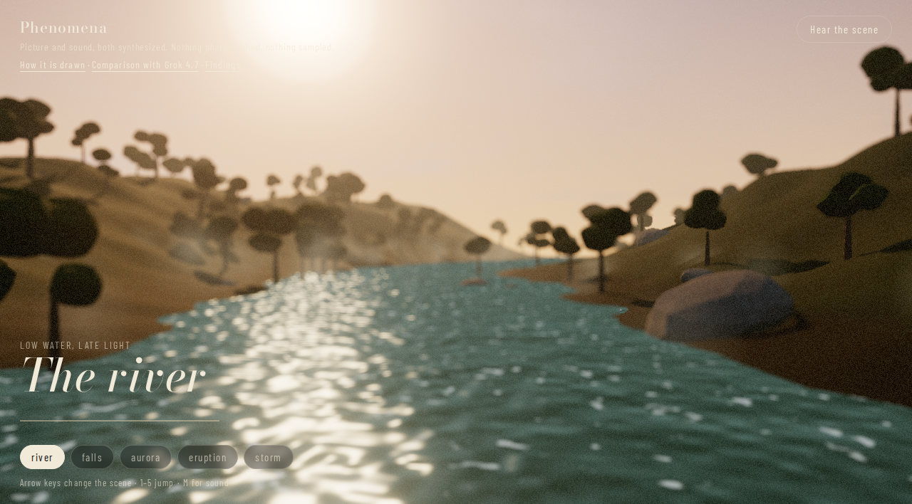 |
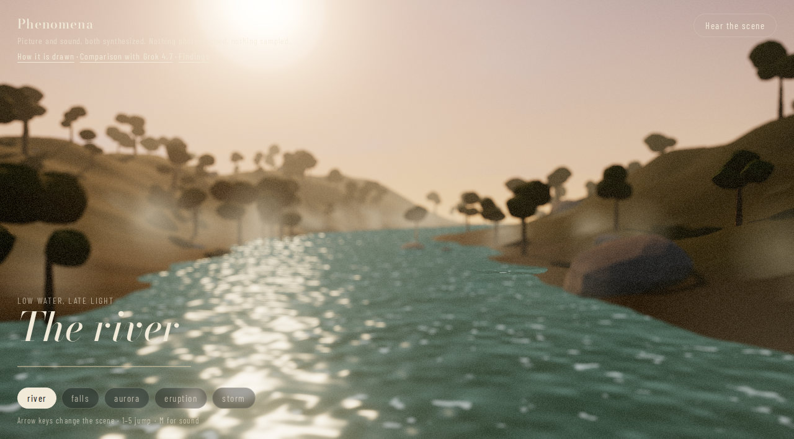 |
| The falls | 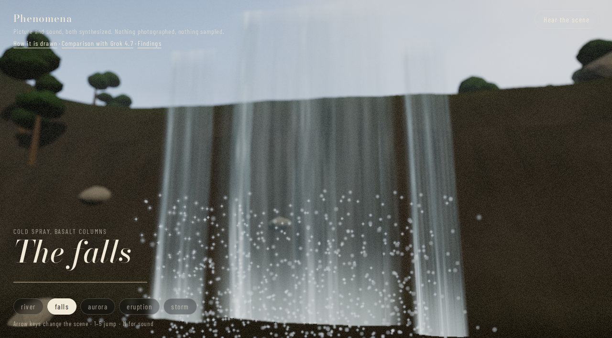 |
|
| The aurora | 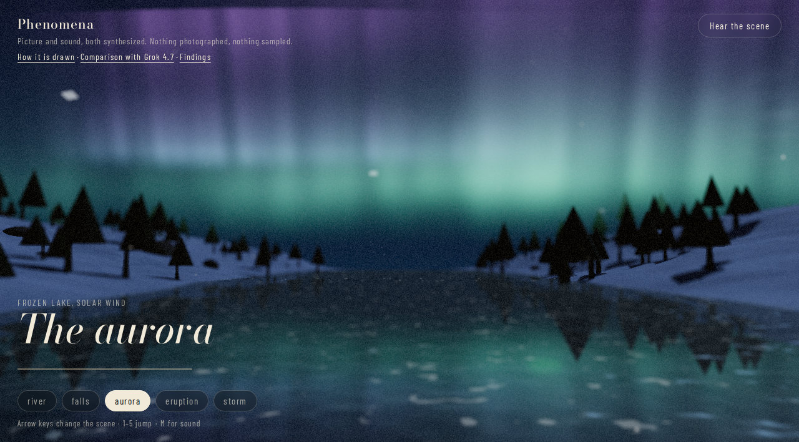 |
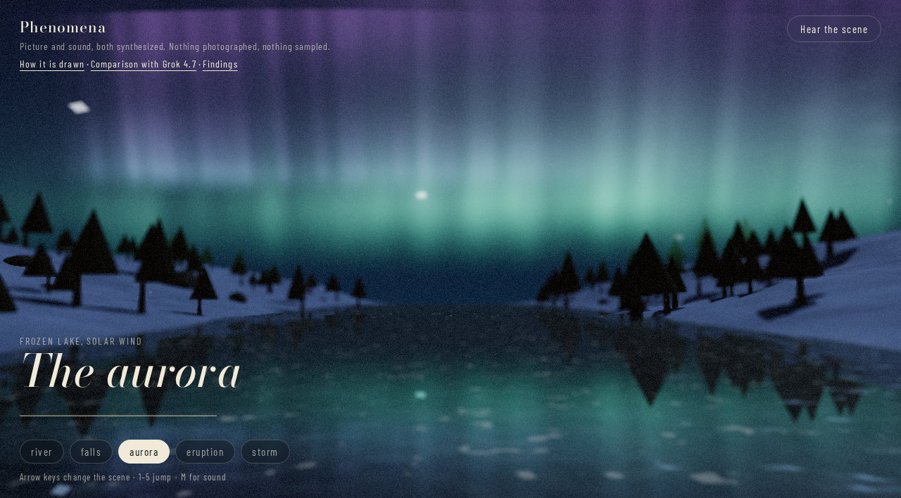 |
| The eruption | 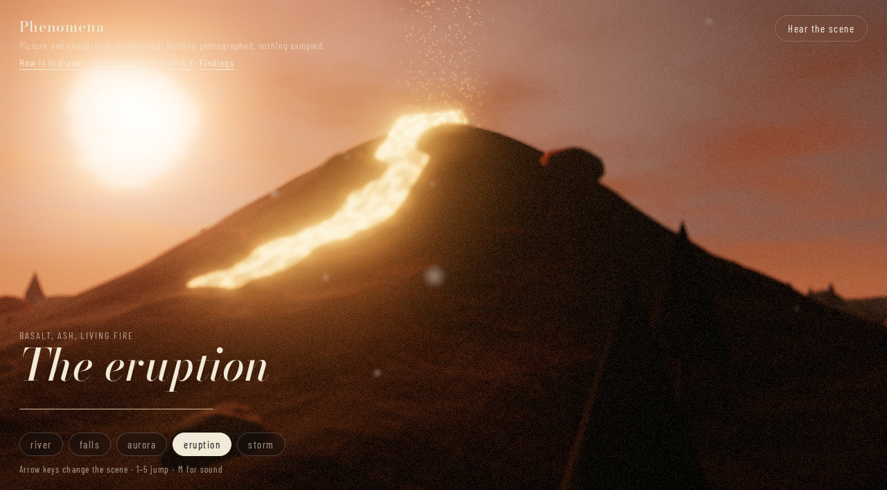 |
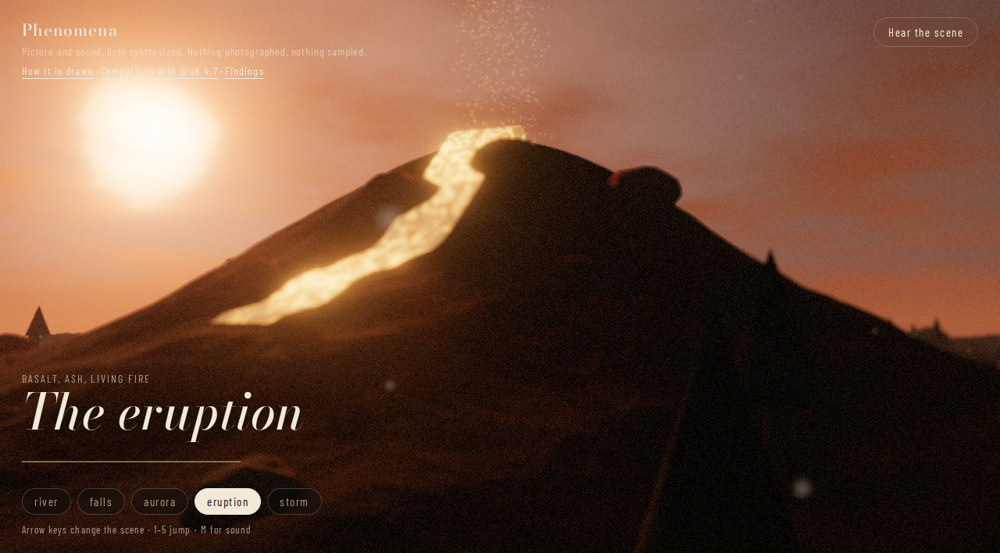 |
| The storm | 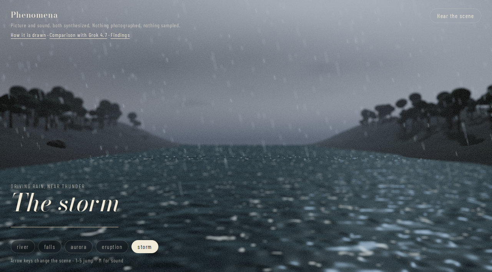 |
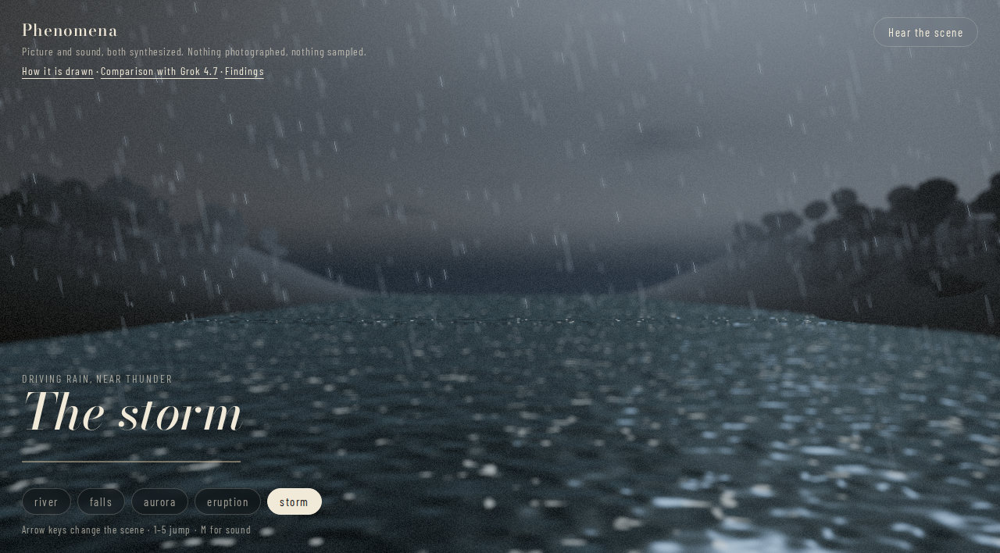 |
Round 2 — Surface detail: spray, lanes, rays, crust
Generation artifacts: generations/gen0-baseline/ → generations/gen3-true/ (five JPG frames each, 1280×708).
Findings before any change (grounded in the code)
- Falls: shrinking spray points in Round 1 could not fix the dots, because src/nature.js particles() uses PointsMaterial with a soft sprite — small points stay hard-edged; the lever is size × opacity in the other direction.
- Falls sheet: lanes are quantised by floor(vUv.x*9.0) in the fall shader, giving nine broad stripes instead of broken ribbons.
- Aurora: curtain rays use noise at vUv.x*64 — coarse; the Reflector renders at 1024², softening the treeline reflection.
- Eruption: crust detail is quantised at vUv*vec2(6,22) with plates at vec2(10,30); the point glow (900, then 650+pulse·600) washes it out.
- Storm: 2200 rain streaks are sparse at 1280×708; the sea colour 0x111e26 is a touch bright against the sky.
Changes made
- River: aperture 0.0016→0.0022 for stronger depth-of-field on the foreground trees; water opacity 0.88→0.84.
- Falls: spray 900→1400 points (interim step toward the Round 3 plume); lanes floor(vUv.x*9.0)→*13.0; dark-lane base vec3(0.09,0.16,0.19)→vec3(0.06,0.12,0.15).
- Aurora: rays 64→80; curtain alpha 1.7→1.55; Reflector 1024→2048.
- Eruption: crust vec2(6,22)→vec2(8,30); plates vec2(10,30)→vec2(14,40); glow 900→700 and 650+pulse·600→500+pulse·400.
- Storm: rain 2200→2800 streaks; sea 0x111e26→0x0e1a22.
Verdict, scene by scene
- Same honest status as Round 1: gen2-round2 frames were stale-server re-renders and are preserved as artifacts of the mistake, not as evidence. The changes above stand or fall in the Round 3 true capture.
- Lesson recorded at the time and kept: a capture only proves something about the code the server actually served — verify the served module before believing a frame.
| Scene | Before | After |
|---|---|---|
| The river | ||
| The falls | ||
| The aurora | ||
| The eruption | ||
| The storm |
Round 3 — Atmosphere & depth (and the stale-server wart)
Generation artifacts: generations/gen0-baseline/ → generations/gen3-true/ (five JPG frames each, 1280×708).
Findings before any change (grounded in the code)
- Falls: the spray must become a mist plume — 1800 large (0.90), very faint (0.08) soft sprites — reversing Round 2's failed shrink direction, as the particles() implementation requires.
- River: fog 0.0042 and mist at opacity 0.07 leave the banks hard; depth needs air, not more objects.
- Aurora: ATMOS fog is already the lowest of the five (0.0018); more haze would dim the curtains and mirror that carry the scene — a grounded reason to leave it alone this round.
- Eruption: ash (size 0.5, opacity 0.45) reads as specks; as a larger, fainter veil (0.7 / 0.32) it should read as air.
- Storm: the scud cloud planes (nearest opacity 0.42) barely register under fog 0.0078; the nearest plane needs 0.52.
Changes made
- Falls: spray → 1800 / size 0.90 / opacity 0.08.
- River: fog 0.0042→0.0052; mist size 7→9, opacity 0.07→0.09 (later corrected in Round 4).
- Aurora: NO CHANGE this round — documented reasoning above, no edit made.
- Eruption: fog 0.0052→0.0060; ash size 0.5→0.7, opacity 0.45→0.32.
- Storm: fog 0.0078→0.0088; nearest scud opacity 0.42→0.52.
- Process fix (the important change): the dev server was restarted and the served src/scenes.js was grepped for the new constants before the gen3-true capture — the check that now precedes every capture.
Verdict, scene by scene
- Falls — IMPROVED, clearly. The plunge-pool spray finally reads as mist; the polka dots are gone. This is the single biggest gain of the five rounds.
- River — MIXED. Mist at size 9 / opacity 0.09 shows as cotton patches on the banks (corrected in Round 4); water still teal against the warm sky.
- Aurora — stable by design (no change); mirror and curtains continue to carry the scene.
- Eruption — NOT improved overall yet. Glow reductions are invisible next to the sky dome's sun (pow(s,900)·18 in skyDome, src/nature.js), which is shared by all scenes.
- Storm — mildly improved mood; rain still reads as dashes in stills, a LineSegments geometry limit rather than a constant problem.
| Scene | Before | After |
|---|---|---|
| The river | ||
| The falls | ||
| The aurora | ||
| The eruption | ||
| The storm |
Round 4 — Motion & the stubborn highlights
Generation artifacts: generations/gen3-true/ → generations/gen4-round4/ (five JPG frames each, 1280×708).
Findings before any change (grounded in the code)
- River: cotton-patch mist (Round 3 overshoot) — the sprites need to be larger and fainter still: size 12, opacity 0.06; exposure 1.05 still blows the sun, 1.00 is the floor that keeps the glitter.
- Falls: the crest mixes 0.4 white at vUv.y>0.92 exactly where the sheet rises into the sky, washing the top of the falls; 0.15 keeps the lip without the glare.
- Aurora: snowfall speed 0.7+(i%5)·0.12 is brisk for a still night; 0.55+(i%5)·0.09 calms the motion. A motion-only change — no still-frame claim is made for it.
- Eruption: the dome sun can be dimmed per-scene through skyDome's sunColor (0xff8a4a→0xe07a42) without touching the shared shader; bloom 0.48→0.38 trims the remaining halo.
- Storm: rain opacity 0.26→0.20 is the last constant-level dimming before the dashes become a geometry rewrite.
Changes made
- River: mist size 9→12, opacity 0.09→0.06; exposure 1.05→1.00.
- Falls: crest mix 0.4→0.15 in the fall shader.
- Aurora: snowfall speed 0.7+(i%5)·0.12 → 0.55+(i%5)·0.09 (motion only).
- Eruption: bloom 0.48→0.38; dome sun colour 0xff8a4a→0xe07a42.
- Storm: rain opacity 0.26→0.20.
- Served code verified (mist size 12, bloom 0.38 grepped from the live module) before the gen4-round4 capture.
Verdict, scene by scene
- River — IMPROVED. The cotton patches are gone; the banks are haze, and the sun is contained without losing the glitter path.
- Falls — kept. Crest wash reduced, mist plume stable; no regression.
- Aurora — still-equivalent by design (motion-only change); reported as such, not as a visual win.
- Eruption — MILDLY IMPROVED. The sun disc is smaller and dimmer and the halo is trimmed; the flow stays bright because the flow is the subject.
- Storm — MILDLY IMPROVED. Dimmer rain reads more like weather; the dash texture remains the known geometry limit.
| Scene | Before | After |
|---|---|---|
| The river | 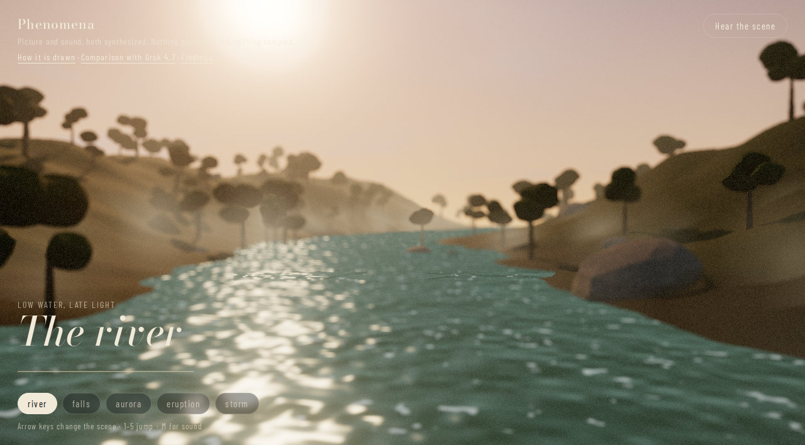 | |
| The falls | 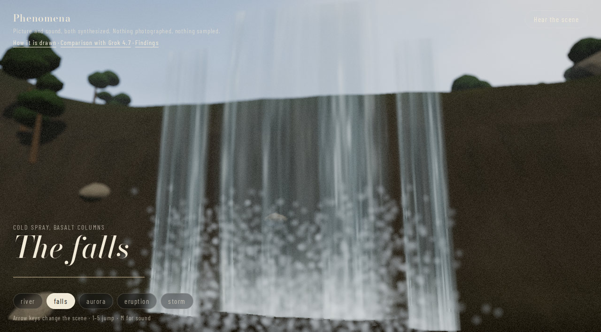 | |
| The aurora | 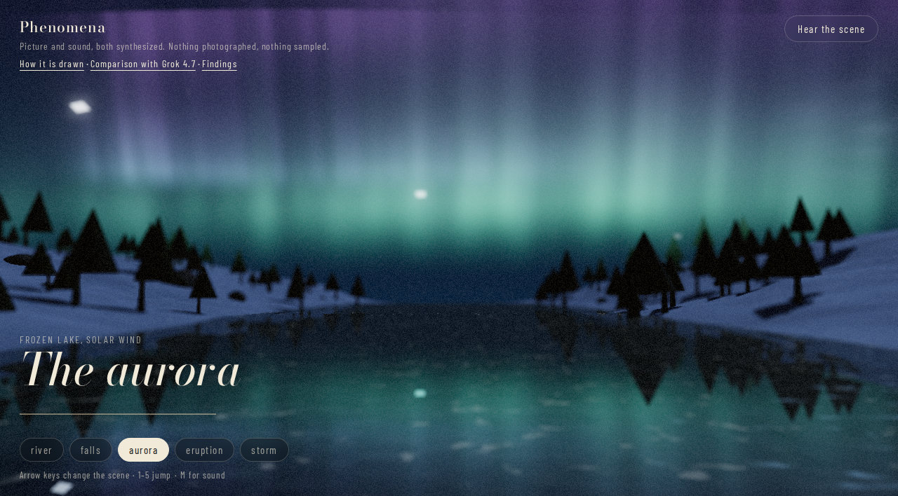 | |
| The eruption | 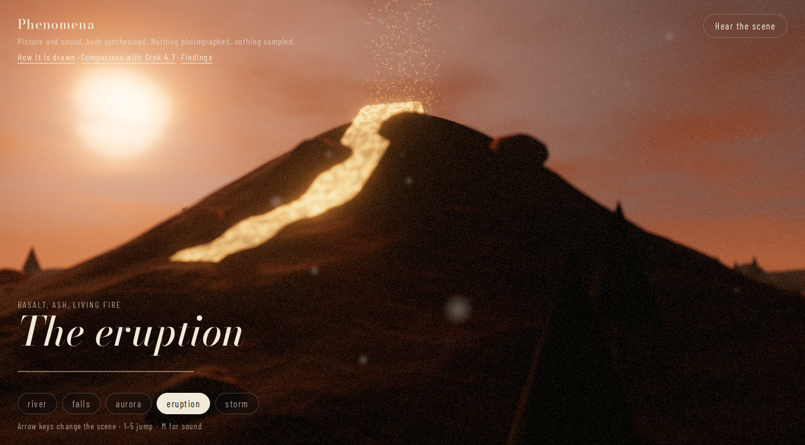 | |
| The storm | 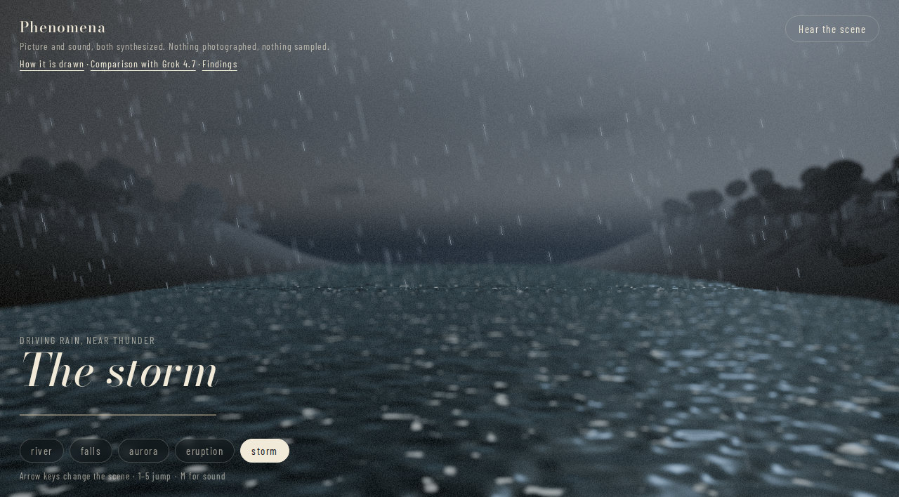 |
Round 5 — Final polish, and knowing when to stop
Generation artifacts: generations/gen4-round4/ → generations/gen5-round5/ (five JPG frames each, 1280×708).
Findings before any change (grounded in the code)
- River: the water colour constant (uColor in the water shader, src/nature.js) is dominated by its fresnel and sun-glint terms, so a warmer base (0x33473a→0x3a4a3c) was predicted to be weak — worth one measured attempt, honestly reported either way.
- Falls: sheet, lanes, crest and mist plume are balanced; the next lever would be crest geometry, which risks the composition that already carries the scene.
- Aurora: curtains, 2048² mirror, snow and bloom sit at their balance point; every lever from Rounds 1–4 is either active or documented as neutral. Further change would be churn, not improvement.
- Eruption: highlight headroom remains only at exposure (1.02→0.98) and the crust multiplier (1.45→1.30) without bending the shared skyDome sun term for one scene.
- Storm: the rain dashes are inherent to LineSegments geometry; the real fix (textured quads) is a rewrite with performance risk for a marginal still-frame gain.
Changes made
- River: water 0x33473a→0x3a4a3c attempted, measured, and REVERTED (see verdicts) — final river code is the Gen4 state.
- Falls: NO CHANGE — documented stop (crest-geometry risk outweighs remaining gain).
- Aurora: NO CHANGE — documented stop (balance point reached in Rounds 1–4).
- Eruption: exposure 1.02→0.98; crust multiplier 1.45→1.30.
- Storm: NO CHANGE — documented stop (LineSegments rewrite out of proportion to the gain).
- Served code verified (0x3a4a3c and crust 1.30 grepped live) before the gen5-round5 capture; all five scenes re-captured fresh, including the three unchanged ones.
Verdict, scene by scene
- River — NO overall improvement from the colour attempt: the Gen5 frame is indistinguishable from Gen4, exactly as the shader reading predicted. Per the goal's rule the change was reverted, so the shipped river is the Gen4 frame (left column of this round's table).
- Eruption — MILDLY IMPROVED, kept. At exposure 0.98 and crust 1.30 the crust texture reads through the glow instead of drowning in it.
- Falls, Aurora, Storm — no change, by documented decision. Their Gen5 frames are fresh captures of unchanged code and match Gen4, which is the point: the process stopped where the evidence stopped.
- End state after five rounds: falls and river clearly better than Gen0, eruption and storm mildly better, aurora held at its best — and no scene made worse. That is where constant-level iteration runs out; the next gains would need new geometry or shaders, a different project, honestly out of scope here.
| Scene | Before | After |
|---|---|---|
| The river | 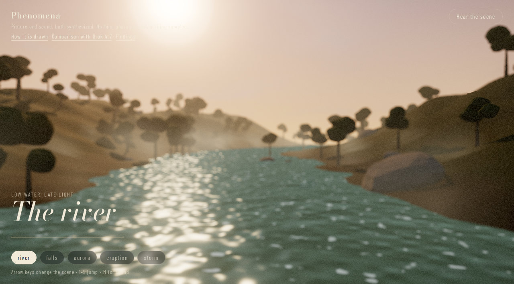 | |
| The falls | 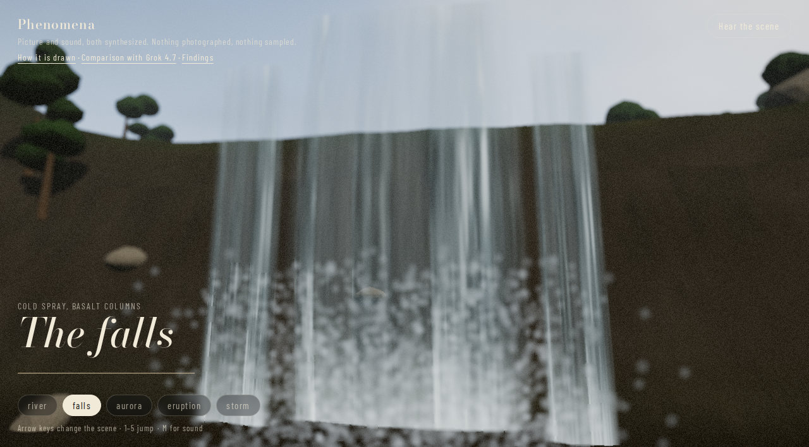 | |
| The aurora | 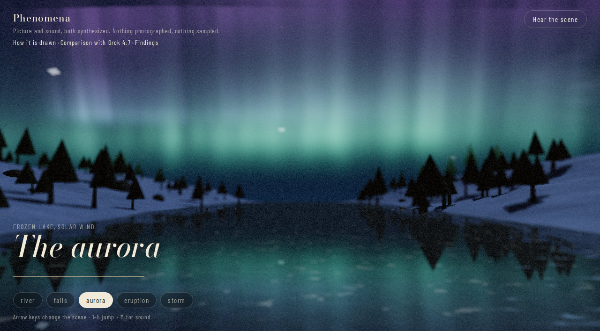 | |
| The eruption | 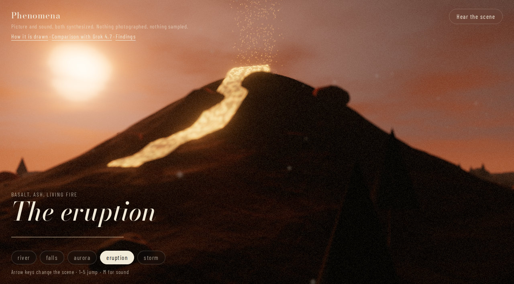 | |
| The storm | 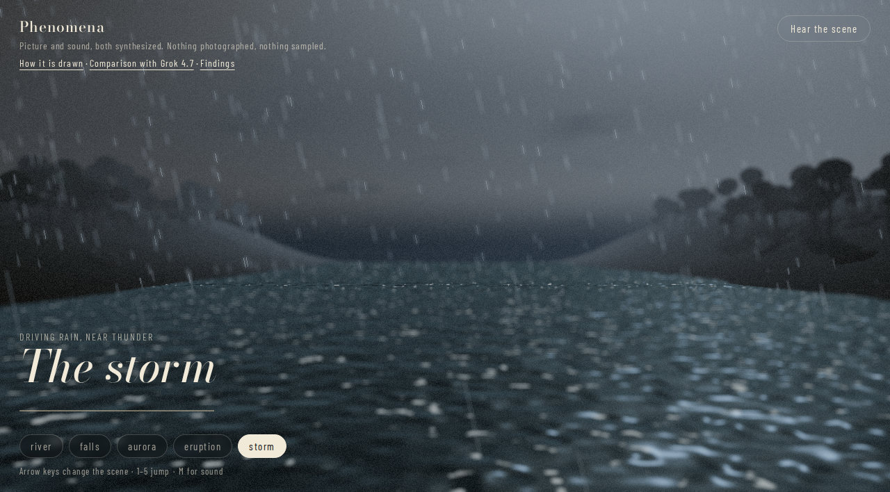 |
What went wrong along the way
- Stale-server rounds (the big one): gen1-round1, gen2-round2 and the first gen3-round3 captures were re-renders of Gen0 code. The Vite watcher on the Windows-mounted filesystem missed the edits; the giveaway was a served-module grep showing spray at its Gen0 constants (900 / 0.34 / 0.42) after Round 3. Those frames are preserved under generations/ exactly as captured — labelled, not deleted — and their original per-round verdicts were withdrawn in generations/round-notes.md. Rule learned: grep the served code before believing any frame.
- Falls spray went the wrong way twice before it went right: shrinking PointsMaterial points (Rounds 1–2) made the dots harder; only reading particles() in src/nature.js showed the fix was the opposite — 1800 large, faint sprites that the depth-of-field could blur into mist.
- Two near-miss verdicts were avoided only by looking again: Round 3's river mist photographed as cotton patches (fixed in Round 4), and Round 5's river colour change was invisible for a shader reason (fresnel/glint dominate uColor) that was predicted before editing and confirmed after — then reverted rather than kept for show.
- The eruption's blown sun resisted three rounds because it lives in the shared skyDome shader (pow(s,900)·18); it was finally tamed per-scene through the dome's sunColor parameter. Bending the shared shader for one scene was considered and rejected.
- Costs and limits: each five-scene capture is ~25 headless Chrome launches; the whole journey is roughly 40 launches and seven generation folders. No quotas were hit; wall-clock was dominated by virtual-time screenshot budgets, not rendering.
- Not verified: the aurora's Round 4 snowfall slowing is a motion change judged from code, not from a recorded clip; still frames cannot show it, and the report says so instead of claiming a visual win.
Where things stand
- Final code: cumulative Rounds 1–5 as verdicted above (river reverted to its Gen4 colour). Production build passes; previews under docs/previews/ are the Gen5 frames (river: Gen4).
- Generation artifacts, clearly marked: generations/gen0-baseline/ (starting point), gen1-round1/ and gen2-round2/ (stale-server artifacts, kept for honesty), gen3-round3/ (superseded by gen3-true/), gen3-true/ (verified cumulative Rounds 1–3), gen4-round4/, gen5-round5/ (final). The JPGs are mirrored under public/generations/ so GitHub Pages (which serves only the build output) can serve them; the canonical artifacts remain in generations/. Capture tooling: generations/capture.mjs; working notes: generations/round-notes.md; this report is generated by generations/make-journey.mjs from generations/round-data.json.
- The findings grid (findings.html) also changed during this session: clicking a frame now plays that animation live in its grid cell (click the label to stop), instead of only opening a new tab — covered by tests/findings-live-grid.test.mjs. Its three current-column stills predate these five rounds; the journey tables here are the current record.
- Live player, comparison and findings pages remain the published site; this journey is published alongside them as photorealism-journey.html.
Back to the player, the two-way comparison, or the three-way findings grid (every frame there now plays its animation live in its cell).